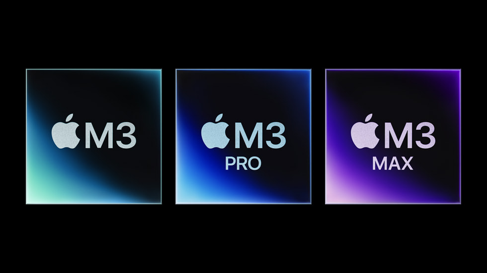
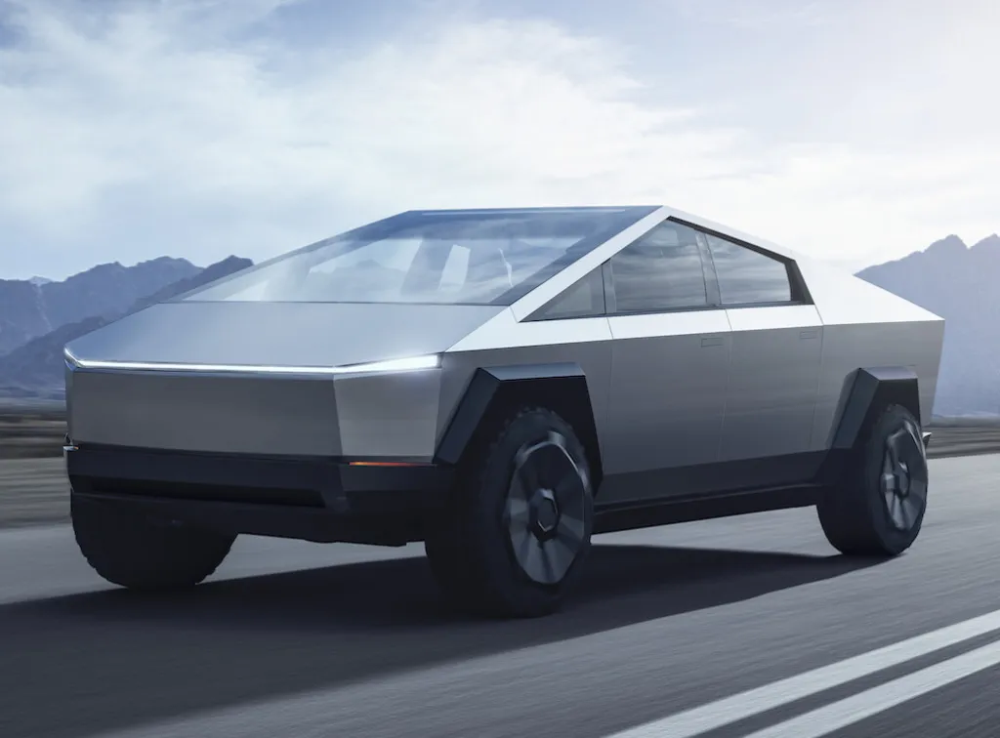
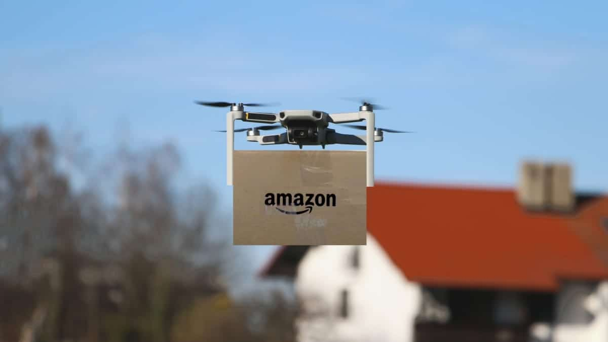

Apple lança novo modelo do MacBook Pro com chip M3
A Apple revelou o novo MacBook Pro com o chip M3, prometendo desempenho superior e maior eficiência energética. O lançamento inclui versões de 14 e 16 polegadas, já disponíveis para pré-venda.
Ler mais
OpenAI anuncia melhorias no ChatGPT com ferramentas avançadas
A OpenAI apresentou uma nova atualização para o ChatGPT, agora com suporte aprimorado para ferramentas de produtividade e geração de código, além de maior integração com sistemas corporativos.
Ler mais

Tesla apresenta novo modelo do Cybertruck
Elon Musk revelou a mais recente versão do Cybertruck, destacando sua durabilidade, autonomia estendida e novas funcionalidades que prometem revolucionar o mercado de veículos elétricos.
Ler mais
Meta lança óculos de realidade mista com IA integrada
A Meta anunciou seus novos óculos de realidade mista, combinando funções de realidade aumentada e virtual. Equipados com IA integrada, o dispositivo promete transformar a forma como interagimos com o mundo digital.
Ler mais

Amazon implementa drones para entrega rápida em cidades dos EUA
A Amazon iniciou um programa piloto de entregas com drones em áreas urbanas, prometendo reduzir o tempo de envio para até 30 minutos. A tecnologia já está em testes em cinco cidades.
Ler mais
Google apresenta Bard 2.0 com recursos de multimodalidade
O Google lançou a segunda versão do Bard, seu modelo de IA, agora capaz de interpretar imagens, textos e áudios. A ferramenta busca competir diretamente com outras soluções avançadas do mercado.
Ler mais